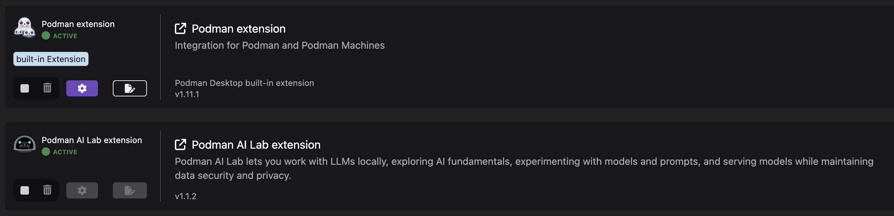

Model Catalog
Podman AI Lab provides a curated list of open source AI models and LLMs in the Model Catalog. Once downloaded, these models are available to be used for AI applications, model services, and playgrounds.
AI Model License
Like a software license, a Machine Learning (ML) model license governs the use, redistribution of the model and algorithm, and distribution of any derivatives of it. Additionally, there are other components to an AI system, such as data, source code, or applications, which may have their own separate licenses.
You can choose to download one or more of the pre-curated models available in Podman AI Lab. These models all fall under the Apache 2.0 license.
| The Apache 2.0 license is a particular type of open source, permissive software license that ensures that end-users are granted a license to any patent that is covered by the software in question. This license ensures the security and availability of safe and powerful open-source software. Check the model’s license and required resources before importing your own models. |
Model Catalog
There are four tabs available in the Models Catalog:
-
All - Displays all available catalog models. Whether downloaded or available is indicated by the model icon being highlighted in green for downloaded models.
-
Downloaded - Displays all models that have been stored locally for offline use.
-
Imported - Displays any models that were imported, and were not originally listed in the catalog.
-
Available - Displays all catalog models that have not been downloaded.

LAB
Download a Model from the Models Catalog
-
Open the Podman Desktop Application.
-
Ensure that the Podman AI Lab extension is active from the extensions menu dashboard.
 -
Select the AI Lab menu icon to open the AI Lab dashboard.
-
Select the Models/Catalog menu from the navigation menu.
-
Select the instructlab/granite-7b-lab-GGUF model file by clicking the name to view details about the AI Model.
This section includes details about the model creator, original model source location, and a description that includes details about the AI Model. This Granite model is limited to a bolded name and needs some updates to its details. For specifics on this model, visit: huggingface hub model card for the Granite-7b-Lab. -
Return to the catalog dashboard and use the DownArrow icon on the far right to start the download of the Instructlab/granite-7b-lab-GGUF file.

-
Download any additional model files that you are interested in working with; here are some suggested models:
-
Instructlab/merlinite-7b-lab-GGUF
-
TheBloke/Mistral-7B-Instruct-v0.2-GGUF
-
In order for an AI Model to be available to the Services and Playground environments, it must be visible in the download tab of the Model Catalog with a green icon indicating that it’s been copied to the local machine.
Importing an InstructLab Trained Model into Podman AI Lab
Podman AI Lab supports models created during fine-tuning with the InstructLab Project.
While LLMs are trained on vast amounts of data across variety of subjects, the InstructLab approach allows you to fine-tune a model on knowledge and skills for specific use cases, and brings true open source to AI model development. What’s neat is that this is possible on consumer-grade hardware. After following the instructions from the project repository, you’ll end up with a quantized .gguf file in the model-trained directory, ready to use with Podman AI Lab.
For more information on the InstructLab project and training models with specific knowledge and skills, visit the project homepage at InstructLab Project.
GizmoGobble Environment
The development team at GG sorted through the models Catalog list of AI Models. After researching several models in detail, they selected three AI Models as possible candidates for the GizmoGenie chatbot.
-
Instructlab/merlinite-7b-lab-GGUF
-
Instructlab/granite-7b-lab-GGUF
-
TheBloke/Mistral-7B-Instruct-v0.2-GGUF
Let’s see how they are going to use the playground features to test each model.